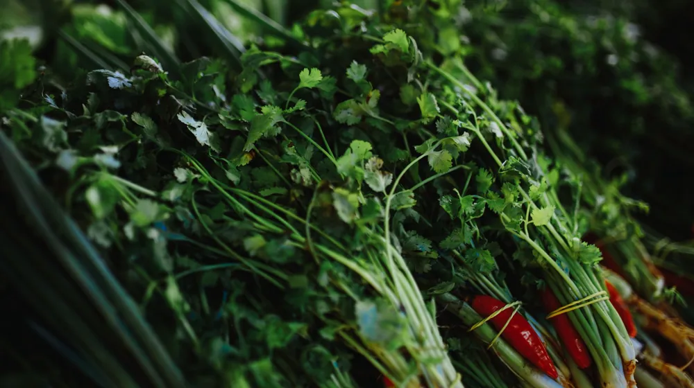

신선함이 2배 오래가는 제철 채소 고르는 법과 쉬운 보관 공식
사진: Mike Jones / Pexels (무료 이미지, 출처 표기)
마트나 시장에서 싱싱해 보여서 산 제철 채소, 며칠 안 지나 거뭇하게 변하거나 물러져 버린 경험이 한 번쯤은 있으실 겁니다. 제철 채소는 영양소가 가장 풍부하고 맛이 좋은 시기이지만, 제대로 고르고 보관하지 않으면 그 가치를 온전히 누리기 어렵습니다.
농촌진흥청 연구 자료에 따르면, 채소는 수확 후에도 호흡을 하기 때문에 온도와 습도 조절이 신선도 유지의 핵심입니다. 오늘 글에서는 실패 없는 제철 채소 선별 기준과 신선함을 최대 2배 늘려주는 과학적인 보관 공식을 쉽게 정리해 드립니다. 오늘 장보기부터 바로 적용할 수 있는 실용적인 팁을 확인해 보세요.
1. 실패 없는 사계절 대표 제철 채소 고르기 요령

채소를 고를 때는 크기보다 표면의 상태와 무게감을 먼저 확인해야 합니다. 제철 채소는 제 시기에 자라 알이 꽉 차고 단단한 것이 특징입니다. 사계절 대표 채소의 구체적인 선별 기준은 다음과 같습니다.
- 봄 (냉이, 달래): 냉이는 잎이 선명한 녹색을 띠고 뿌리가 너무 굵지 않으며 잔뿌리가 적은 것이 좋습니다. 달래는 알뿌리가 둥글고 특유의 향이 강한 것을 고르세요.
- 여름 (토마토, 가지): 토마토는 들어보았을 때 묵직하고 꼭지가 마르지 않은 채 초록빛을 띠는 것이 싱싱합니다. 가지는 보라색이 선명하고 꼭지에 가시가 살아있는 것이 신선합니다.
- 가을 (무, 배추): 무는 단단하고 두드렸을 때 꽉 찬 소리가 나며, 윗부분의 초록색이 넓고 선명한 것이 답니다. 배추는 속이 꽉 차서 묵직하고 겉잎이 밝은 녹색을 띠는 것을 선택하세요.
- 겨울 (시금치, 우엉): 시금치는 뿌리 부분이 선명한 붉은색을 띠고 잎이 두꺼우면서 길이가 짧은 동초(겨울 시금치) 품종이 답니다. 우엉은 껍질에 흠집이 없고 굵기가 균일한 것이 좋습니다.
2. 신선도 유지를 위한 채소 보관의 기본 3법칙
채소를 무조건 냉장고 신선칸에 밀어 넣는 것은 피해야 합니다. 신선도를 오래 유지하기 위해 반드시 기억해야 할 3가지 원칙이 있습니다.
첫째, 수분 관리입니다. 채소가 마르는 것을 막기 위해 수분을 차단하는 것도 중요하지만, 과도한 물기는 부패를 촉진합니다. 씻어서 보관할 때는 반드시 물기를 완벽히 제거해야 하며, 씻지 않고 보관할 때는 흙을 가볍게 털어내고 신문지나 키친타월로 감싸는 것이 좋습니다.
둘째, 에틸렌 가스 차단입니다. 사과, 토마토, 바나나 등은 식물 호르몬인 에틸렌 가스를 많이 배출합니다. 이 가스는 주변 채소의 노화를 촉진하므로 시금치, 브로콜리, 상추 같은 잎채소와는 반드시 격리하여 보관해야 합니다.
셋째, 세워 보관하기입니다. 대파, 아스파라거스, 오이 등 서서 자라는 성질을 가진 채소는 눕혀서 보관하면 위로 자라나려는 성질 때문에 에너지를 소모하여 빨리 시듭니다. 용기에 세워 보관하면 수명이 길어집니다.
3. 주요 제철 채소별 맞춤형 보관 방법 정리
각 채소의 특성에 맞는 적정 보관 온도와 밀폐 여부를 지키면 신선도를 훨씬 오래 유지할 수 있습니다. 아래 표를 참고하여 냉장고 정리법을 변경해 보세요.
* 주의: 위 보관 기간은 2026년 가정용 냉장고 기준으로 작성되었으며, 보관 상태나 냉장고 성능에 따라 차이가 있을 수 있으므로 주기적인 확인이 필요합니다.
4. 채소 보관 시 흔히 하는 치명적인 실수 3가지
많은 분이 냉장고에 넣기만 하면 안심하지만, 오히려 신선도를 떨어뜨리는 잘못된 습관이 있습니다.
첫 번째 실수는 밀폐용기에 밀어 넣기입니다. 잎채소는 호흡하면서 이산화탄소를 배출합니다. 통풍이 전혀 되지 않는 꽉 막힌 용기에 가득 채워 넣으면 습기가 차서 금방 물러집니다. 용기 용량의 80%만 채우는 것이 좋습니다.
두 번째 실수는 감자와 양파를 함께 두는 것입니다. 많은 가정에서 박스째 보관하는 두 식재료입니다. 하지만 양파는 감자의 수분을 흡수하여 쉽게 썩게 만들고, 감자는 양파의 부패를 촉진하는 가스를 냅니다. 이 둘은 반드시 분리해서 통풍이 잘되는 서늘한 곳에 따로 보관해야 합니다.
세 번째 실수는 냉해(저온 장해) 고려 부족입니다. 열대/아열대성 채소인 가지, 토마토, 호박 등은 7℃ 이하의 저온에 오래 방치되면 세포가 파괴되어 표면이 움푹 패거나 속이 검게 변합니다. 가급적 상온 보관하거나 냉장고 신선칸 중 온도가 상대적으로 높은 구역에 두어야 합니다.
5. 자주 묻는 질문 (FAQ)
Q. 조금 시들해진 잎채소를 심폐소생하는 방법이 있나요?
A. 냉수나 미지근한 물(약 50℃)에 시든 채소를 5~10분 정도 담가두면 삼투압 현상과 기공 자극을 통해 수분을 다시 흡수하면서 아삭아삭한 상태로 되살아납니다. 이를 '50도 세척법'이라고 부르며, 잎채소의 신선도를 살리는 데 매우 효과적입니다.
Q. 채소를 냉동 보관할 때 주의할 점은 무엇인가요?
A. 수분이 많은 무나 배추, 오이 등은 냉동하면 조직이 파괴되어 해동 시 즙이 빠져나가고 흐물흐물해집니다. 냉동 보관을 할 때는 대파, 마늘, 고추처럼 다져서 양념으로 쓰거나 살짝 데친 시금치, 우거지 등을 지퍼백에 얇게 펴서 급속 냉동하는 것이 좋습니다.
🔗 이 글도 함께 보면 좋아요: 청년내일저축계좌 신청 자격 3가지 조건과 10만원으로 시작하는 방법
관련 추천 상품
이 포스팅은 쿠팡 파트너스 활동의 일환으로, 이에 따른 일정액의 수수료를 제공받습니다.